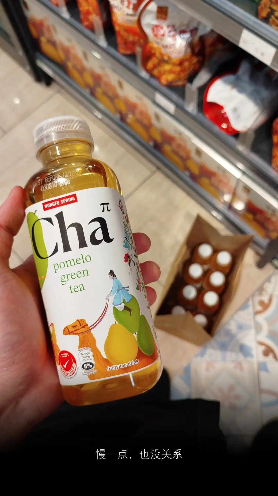

用你这个就要 subscribe to Google Workspace
Subscribe 就要一笔钱，而且不便宜
蛤？这个不需要钱的噢！
你的意思是叫 users 用 personal Gmail?
对啊！
这个更有风险
公司不允许用私人邮件，而且要提醒你
用私人邮件执行工作是 illegal 的
分分钟还会被 Google banned
谁负责？
秋！
中秋节要到了
你赢你赢，我拿金
正恩等下会去找你
***
有时候事情根本不严重
只是给对方形容之后，开始水肿
工作上很少会遇到这种人
难得有机会，那就机不可失
来个自身反应考察，看自己处于哪个阶段
炉火纯青？百毒不侵？
以为那会是一场华丽修行，谁知？
我毕竟是凡人
外面下着雨，冷气开到最大
身体却越来越热，温度只上不下
对方说话的语气，堪比烟霾，让人厌恶
再大的雨水，也无法扑灭心中的火焰
有时你遇到的人，满口道理，但用错方式
就算是好的道理都不想听了，听不进还很恶心
Girl，昨天的劝告
我对你有信心，没有错
错在忘了提醒自己，同样需要有信心
等真遇到，信心是假的，火烧连环船是真的
跟那种人说话，耳朵会发热，拳头会握紧
飞刀，暂时不需要，最好是不需要
心里受的委屈，是那么渺小
这句话，我发现当下效果不怎么好
要等心情冷却之后，才能吃出味道
当事情发生在自己身上
有多少人能够表现得云淡风轻、宠辱不惊？
学校没有教的功课，现实世界不会忘了你
出来社会以后，遇到的人多了
他们自然会免费让你上这堂课
人生经历，喜怒哀乐，能有几何
成绩好不好，就要看那面镜子
镜子里照的是谁？是你自己
没被火烧过，如何变凤凰
被火烧过，也不一定成为凤凰
可以是叉烧、烧腊、或是烧焦
但至少，你更懂得人生的滋味
往后遇到世俗的眼光，不再心慌
从容面对，微笑带过，继续生活
Burn
车上，吃了黄梨
男人没纸巾抹手，直接抹裤子
女人瞪着男人道：
不要在孩子面前，立不好的榜样
爸爸转向孩子道：
不要学爸爸，要听妈妈的话
说完，继续抹裤子
妈妈摇头，对孩子道：
长大以后，不要学爸爸
左边是妈妈，右边是爸爸
孩子要听谁的呢？
这时电台播了一首歌
孩子还小，不会说话，但那是他的心声
我应该在车底，不应该在车里，看到你们吃着黄梨
这样一来，我也比较耳根清静，给我好好的休息
几年过去，孩子长大
他总记得，车里的那一幕
学爸爸不像样，学妈妈只会讲
他最后走出自己的一条路
走到红绿灯马路边，开启了自己的事业
这时，他看到一辆车
那正是他小时候的记忆
他毫不犹豫，走近那辆车子
轻轻敲了几声车窗
车主拉下车窗
孩子道：
Uncle, mau tissue?
One pack one ringgit
Makan ong lai x da tissue nanti kena marah
那你觉得应该怎么做？
我是觉得爸爸应该抹妈妈的脸
再给妈妈轻轻地一个吻
再从车后座拿一束花出来
多么温馨浪漫的画面
虽然我不知道花会是怎么来？
如果一切可以重来
孩子就不会在路边热晒雨淋卖 tissue 了
家庭教育很重要，你的行为举止更重要
当视觉先看到，耳朵已经听不到
爸爸妈妈，自从有了孩子之后
我们之间好像掉了一样东西
可不可以一起找回来呢？
它叫爱情
什么是爱情
今天是林欣月的生日！
我大她十五年
她妈妈大我七年
什么？
我有点不会算数了
不会算数没关系
重点是自己没听错
等等！
这有什么好奇怪的
早结婚
早生贵子
妈妈和女儿
走在街上
是一对姐妹呢
我只是有些好奇
怎么那么多十月份宝宝？
如果说十月怀胎
根据科学，需要倒带十个月
故事就发生在 ...
十二月？圣诞节？平安夜？
一顿晚餐、一瓶红酒、一束鲜花
人生得意须尽欢，莫使金樽空对月
爸爸妈妈相爱，欣月不过是个意外
林欣月，你有什么生日愿望？
绑着牙套，她带着笑容道：有钱啦！
放工前，闲聊间
才得知今天是她的生日
吉他就在角落边
赶紧来一首不是很动听的生日快乐
她竟然要录影，只给她录背影
她这女生特别勇敢，是个乐天派
不到一星期，就要求和我们来张合照
说要发去 Snapchat Streak 不能断
什么来的？
我只懂 Microsoft Reward Daily Streak 这个也不能断
至少每两个月
可以换一张 Lotus's RM50 voucher 买蔬菜水果
讲到 IG，她有两个账号
一大一小，不大不小
同事问一半不问一半
多少个 follower，关注的是谁
然后就不了了之
我一边洗耳恭听，一边皱起眉头
关键问题竟然不问！
她的 IG 账号是什么？
导演偏不让你知道，现在流行开放式结局
话题被一只，突然出没的流浪猫打断
那男同事很怕猫，他越怕猫，猫越喜欢他
猫跟他，就一直绕着餐桌躲猫猫
我想继续问
最后自己也绕了地球，想了一圈，还是算了
我有顾虑
我已经孟母三迁
从 Friendster，到 Facebook 再转来 IG
就是因位不想身边的人追踪到走过的痕迹
我不想再搬家了
但是如果现在 ...
只要一个裂口破开，就很容易中破伤风
我不怕被人误解，但害怕被别人了解
就像那个同事怕猫的心情，一模一样
林欣月，生日快乐！
你已经是个有钱人
好听的名字就是一个奢侈品
不是人人都买得起
因为它，从来不是钱的问题
为二十岁，干杯！
别怕别怕
That is how I met your mother.
We live and die in the shadows, for those we hold close, and for those we never meet.
两年后，我不再是 INFJ-A
其实我很喜欢刘德华
我觉得你很像他
别人问哪一点像他？
我又说不出
可能你和他都是属牛
那么奋斗，那么努力
刚看了你最新上传的十週年專訪
你提到少讲话，想带出故事和简单化
其实我很喜欢你说话
只是有时候看你唱现场的片段
会发现一个不痛不痒
但不说又不爽的地方
就是到了该安静下来的 timing
你没有静下来
你唱歌很好听（先礼），可是唱到一半（后兵）
你会突然喊两下，讲几句话
想带动那气氛，忍不住开口
皮痒是么？
这举动给我的感觉 ...
不够 pro
iPhone max 不够 pro
不要这样勒
马来西亚不累不累，如果好好唱就完美
可以说话，但要在对的瞬间把话接进去
我现在吹着风，吃着薯片
在键盘上打两三个字评论当然简单
这份不可能的任务，最后还是要交回给你
当你能在对的时刻，把故事结合在歌曲里
Mamma mia!
那画面肯定能在观众的脑海中停留更久
就算以后坐在电脑前看回旧影片的朋友
他们也不会觉得太唐突，还能感同身受
其实讲那么多，是为了要推销
这里有个刘德华现场示范
来，参考一下
不知道你知不知道，从今年开始认识你
我不想再错过与你成长的日子
我发现
你是一个可以风雨同路的伙伴
那就一起，加油！
当我遇上蔡恩雨
外面的天空
好像 YouTube streaming
一下清，一下朦
可能来到月尾，quota 不够用了
星期六星期日，政府额外补贴
所以那两天是 HD view
来到星期一，补贴过期，画质掉去 480p
星期二午餐时间
午餐摆在眼前，鸡腿都看不见
Nasi Lemak Village Park 饭香
盖不过室外烟霾的焦窿鼻呛
这两个月，指数反反复复
终于看见曙光，然后失望
再见曙光，又见失望
那是陈永仁的人生缩影
三年又三年，三年又三年，没完没了
跳楼机免费任你坐
你突然说，我要做的是好人，不是跳楼机
以前我没得选，现在依然没得选
上星期，连续下了几天雨
会不会是因为，我遇见了一个顾客
他塞钱进我口袋
顾客说
我的缺点你不要学，我的优点尽管拿去用
他就这样传授了我，他的武功秘籍
人生有一招叫威胁
永远奏效，除非无效
不知道，金正恩送过去的
双黄核弹抹茶口味月饼，顾客吃了没
无论如何，顾客永远是对的，我们就学以致用
最近，我喜欢走威胁路线，句句都是危言耸听
谁不喜欢蔡恩雨？那地方半年不会下雨
突然间就一直下雨，那是物极必反
喜欢可以，但是不要太喜欢
所以现在，雨又没了，烟霾又重现，怎么搞的？
看来你还不明白
什么叫喜欢，什么叫不喜欢，什么叫太喜欢？
你一招，我一招，彼此都在过招
Tik Tik Tak
耳边又传来下雨的声音
可是雨，帮到一时，帮不到一世
雨声逐渐变小
雨停了
Life goes on

等待过马路的时候
感觉左手被点了两下
有刺客！
抬头望过去，不见人影
奇怪，是错觉么？
不会是早餐吃太饱？
天若有情天亦老，我只担心吃不饱
把头转向右边，刺客在微笑
林欣月！
笑里藏刀，戴着牙套
竟然还会点穴这一招
她和以往的 intern 不一样
她属于最新解锁 vI506 版本：
鹤立鸡群
不对
以她的身高，矮我一个头，我像一条狗
与她对话，总是需要狗眼看人低
我和蔡恩雨对话，那是两条狗深情对望
除非她穿了高跟鞋，我就带我的剪刀
抽刀断水水更流，举杯消愁愁更愁
我没有一八三
但是头发可以梳站站
我还会扮 Sin-chan
炒 kangkung belacan
矮一点，也没关系
前方车辆来来往往
每个人有自己的方向
有些已经行驶在路上
有些还停留在马路旁
警察叔叔就在前方
指挥交通，舒缓拥堵
孩子别紧张，生活不是竞技场
给点时间，很快就轮到自己
只要心还愿意相信，未来一定会等你
今天蔡恩雨发布新歌，歌词唱进心坎里
听完以后，心情特别好
走进 Jaya Grocer，来到饮料区
看着不同口味的茶派，灵感涌现脑海
我有话想对 interns 说，但不晓得从何说起
灵感就对我说：
喝，不能只是一个人喝
歌，不能只是一个人听
我带着九支茶派
像华哥那样气派，每个人两百块
你毕业那天，是明年二月
时间在倒数
我数学不好，可能会忘记
如果时间走得太快
如果时间可以被提醒
如果没有如果
在你离开公司之前
我会跟你拿 IG 账号
至于现在
慢一点，也没关系
I feel the need, the need for speed
Slow is smooth, smooth is fast
如果你要记得，那就要定时去接触它，这样它一辈子都跟随着你。
C2
九十九，它还是你的舞台秀。
今天去剪头发
步入理发店，店员和我说了一声 welcome
刚坐下，椅子没坐暖
耳边传来 Hello from the other side ...
那是 Adele 的歌声！
听见这句歌词，我睁大眼睛，心里噗噗噗
三个星期前
蔡恩雨演唱会开票当天，我很紧张买票
原来她的票不难买
现在要买都可以，明天都还来得及
十分钟内，分两次账单，九张票到手
心里在想，到底有没有买错？
家人会不会全出席我不确定
我是先斩后奏
不管来不来，只要你来，就一定有你的票
付了钱，不想那么多
两个小时后，公司 WhatsApp 群组响了一下
老板娘告知，其中一位同事的老公今早离世了
得知消息那一刻，心情是波动的
很多问题，在生死面前有了答案
我不再问自己，有没有买错，而是值不值得
我生命有一个人，他名字叫 Raymond
一年只会见他三次
再多几个月，这关系就满十年了
一个星期前，又是时候要见他
可是他迟迟不回我信息
我给他的最后一封留言
是一句简短的 Hello
他不读也不回
就在我 car sticker 快过期的前两天
他打给我
第一句就说 I am sorry，身体出了一些状况
他的声音很弱，断断续续，听不清楚
电话忽然断线
再次打给我，是一个马来人
然后把电话传给他，他分明是在医院
隔天见到他的时候
一个女人陪着他，他坐在副驾驶
他行动不便，像是半中风
以前都是他独自驾车找我
现在他这种完全没有力的状态
还是想把 car sticker 亲手交给我
我不知道能说什么
突然想起
有一次他 mabuk 放我飞机，我很生气
现在看回去，这些都是很小的事而已
今天刷脸书
刷到一个熟悉的面孔登上了讣告栏
那是我小时候
常会去给她剪头发的一位安娣
长大工作后，不再给她剪
但还是会时常带妈妈到她的家给她剪
后来听说，她身体出了问题，需要休息
几年前她就再也没有替人剪头发
我就不再知道她的消息
直到今天
我剪头发的这一天
死神离自己和身边的人都好近
越来越近
它没有名片，随时会出现
再有准备的人，面对它的时候
依然是那么不堪一击
我只是想做一个，当这些事情发生的时候
我对得起自己，该遗憾的人不是我
因为我已经做了
我想做的、我能做的、我可以做的
不遗憾
公司又来了一个新 intern
不是每个 intern 都能写成文字
但是刚来的这个，是不是喜欢七龙珠？
一头长发染成金发，远看像极了超级赛亚人
近看，发色还会随着距离改变，有够神奇
穿着搭配花过心思，侯佩岑都说 okay
简单、优雅、好看、有万能、有惊喜、有快乐
前几天我在想着绑牙，谁知道她就在绑着牙
最让人会心一笑，是她脚下那双鞋
New Balance
只要你穿 N 牌子的鞋，怎么看都是挺顺眼
通常跟实习生 ice breaking
来来去去，离不开两道问题：
你知道谁是刘德华么？
我在统计，哪个年龄开始，刘德华会被年轻人遗忘
你会不会福建话？
我想知道，福建话会被第几代年轻人失传
林欣月
一个漂亮的名字，背后都有个故事
Shoot for the moon
Even if you miss, you'll land among the stars
你爸爸是后羿，你妈妈是嫦娥
两情相悦，不顾一切
射出去的箭，无法挽回
那晚夜色太美，你妈妈太温柔
从此世界，多了一个林欣月
欢迎来到职场生涯，很快就变成残月啦
Moonlight
第一次载侄女
一辆车，两个人
从 PJ 回马六甲
隔天再从马六甲回 PJ
她爸爸要上课
她妈妈在印度
她姑姑要做工
我实在太得空
要不要跟小叔回 kampung？
找爷爷和嫲嫲，畅聊人生
她 on！
On 得好爽快
我的第一个反应
她会不会上车就想大便？
平时一个人容易
现在多了一个小瓜，多了一份不确定
人因不确定，从而锻炼临时反应
也让你遇见，从所未有的风景
两个小时很快过，她没有要上厕所
只不过坐我的车，必须听蔡恩雨的歌
《慢一点，也没关系》
不停循环
侄女听到傻了，没有其它歌了么？
当然有！
换一首，也没关系
我们不做傻子，我们做疯子
《疯子》
不停循环
她听到疯了
我问她，你会说马来话么？
没有回答
会唱国歌么？
没有回答
我唱一句，你接下去
Negara 什么？
ku
Tanah tumpahnya darah 什么？
ku
马来文不错，还可以再进步
国歌一定要会，马来文一定要学，知道么？
十二月带你去看蔡恩雨真人
你一定要来，知道么？
如果爸爸妈妈说不可以
你要抗议，知道么？
你已经不是两三岁了，知道么？
可以自己做决定了，知道么？
如果爸爸妈妈说演唱会太大声，会影响耳朵
那天 Max Verstappen 已经给了小叔 ear plugs
这个也不是问题了，知道么？
既然都不是问题，我们继续学马来语
天使马来文叫 bidadari
来，你姑一声
ku
天使变成
小叔的天使
很好
时间过得真快，两天来回终于到家
你去找姑姑玩，不要 kacau 我
我要 kacau 蔡恩雨
离开我 离开我
当太阳出现，它就会消失。
因为眼前出现一只 Fresh & White 北极熊。
Dior 大颖是谁？
Axiata Arena 演唱会
两个小时卖完，还宣布加场
Priscilla Abby 蔡恩雨是谁？
三个星期了，还有票出售
这是什么一个状况？
云顶可以容纳五千人
Axiata 至少十五千人
三倍！
如果我喜欢的是大颖，完了！
我没把握能抢到票
尤其一次交易限制只能买六张
这就像搭 LRT 往 KL 路线上班
火车来了，你不一定上得到
等两轮班次，也未必上得到
庆幸我工作地点是反方向
老板英明，明天起薪！
生活，好不容易
或许这就是注定，注定我喜欢吃菜
没有对比，没有伤害
但已经对比了，伤害已造成
我会在想，问题出现在哪里
要解决一个问题，首先要找到根源
然后，模拟那个问题
听说，你不喜欢蔡恩雨？
那么你住的地方半年内都不会下雨
我最讨厌用威胁手段来逼别人喜欢
这是个很自私的行为
对方就算承认喜欢，也不会是真心的
我为自己的私心，感到羞愧
所以，半年哪里够?
至少常年不下雨，直到真心喜欢为止
你不要口是心非，眼睛眨啊眨那边
所以，你喜欢蔡恩雨么？
最好不要回答得太慢！
这次的烟霾
看到阿婆过马路
我都不扶，我只服它
它的坚持，让不少情侣，自愧不如
日久见人心，路遥知马力
给时间一点时间，时间会说故事
只是我的故事里，再也没有你
爱你不是两三天，那是烟霾的座右铭
也是它的循环播放曲，直到海枯石烂
它对马来西亚情有独钟
这次等到机会，它绝不轻易放弃
报导说，烟霾会持续到明年二月
二月是情人节，此情可待
既然要结束，那就结束得有仪式感
竭尽所能，不留遗憾
在情人节那天，好好说再见
烟霾经历了太多，它比谁都清楚
情侣之间的甜言蜜语，当下的快乐便是永远
曾经拥有，就别在乎天长地久
等真遇到考验：验证失败！
从那天开始，它的世界变得
朦朦胧胧、模模糊糊、若隐若现、可有可无
是你让我看透生命这东西，四个字坚持到底
如果没有你，我的生活回到一片清晰
人不要活得太清醒、太清晰
幸福反而会被稀释
这句话，我当年不了解
后来长大了，道理都懂了
但只有烟霾采取行动
直到现在，它还舍不得散开
因为它知道，散开之后
不知又要等个多少年
人生有多少个十年？
还能有多少个十年？
你漂洋过海
来到我的城市
只想看看我最近改变
然后对我说声
只是说一声：
好久不见
如果哪天蔡恩雨跟我做朋友
我不要跟她做朋友
这样我就可以吹一辈子
曾经蔡恩雨想做我的朋友，我拒绝了她
所以直到现在，我们都不是朋友
世上很多东西，本来就说不清
尤其是如果的事
尤其是感情的事
尤其是人与人之间的那些事
上一代的仇恨，可以传到下一代
代代相传、冤冤相报，何时了？
直到某一天，有个人挺出来
够了！别说
我不想听
是时候了断
这是《边城浪子》的故事
如果时间能重来
回到那一天
我会改口说
蔡恩雨
你从不知道，我想做的不只是 ...
上课钟声响起
谁也听不见说了什么
转眼我们就毕业了
今天有个朋友生日
太久没联系，你叫什么名字？
可能是君子，可能是疯子
大学那段日子
已经是十多年前的事
过得好么？
听说今天生日的人，年龄都会大一岁
李宗伟每年都陪你大一岁
长大后，我们不说生日快乐
我们说
我想要做一个疯子！
我的人生就想要疯这一次
变得可以一个人面对
可以快乐，可以无畏
你的朋友，和蔡恩雨还不是朋友
要不然
我叫蔡恩雨唱生日快乐给你听
十月的宝宝
生日快乐
再见有很多方式，谁又会知道你和我是哪一种方式？
我看着那位还在吃着星洲米粉的同事，再望向手机屏幕，再把眼神放回她身上，怎么越看越像？
嘿，你生日快到了。二五女，生日快乐。